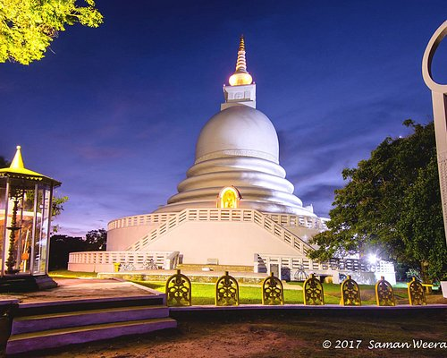
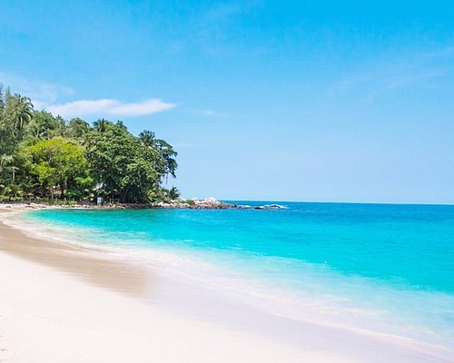
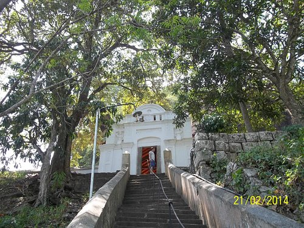
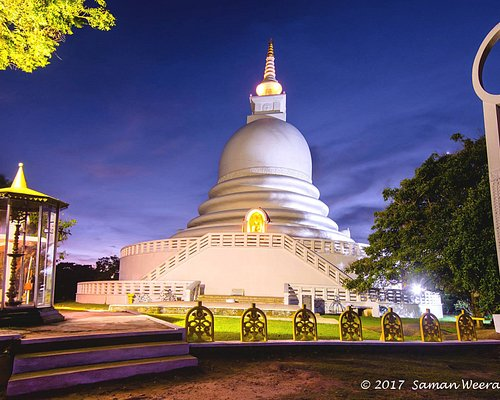
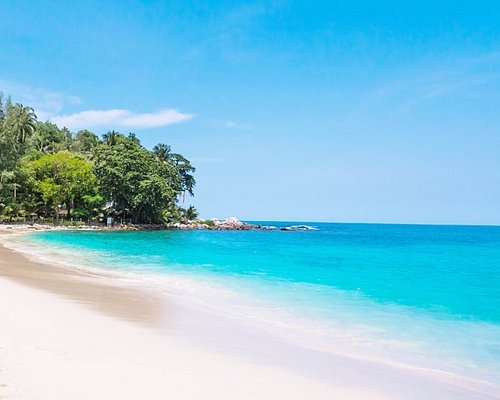
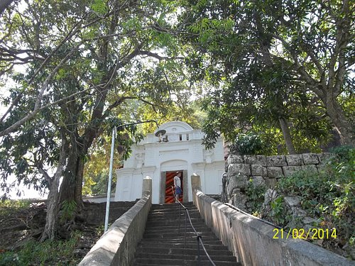

.png)
The Southern Province of Sri Lanka is one of the nine provinces of Sri Lanka, the first level administrative division of the country. The provinces have existed since the 19th century but did not have any legal status until 1987 when the 13th Amendment to the Constitution of Sri Lanka established provincial councils.The Southern Province of Sri Lanka is a small geographic area consisting of three districts: Galle, Matara and Hambantota. Farming and fishing are the main sources of income for the vast majority of the people in this region. Important landmarks of the Southern Province include the wildlife sanctuaries; Yala, Lunugamvehera, and Bundala National Parks. Ussangoda in Ambalantota which has pre-historical connections has a panoramic view of the beach and the sea, and the ancient cities of Tissamaharama, Kirinda, and Galle. During the Portuguese period, there were two famous Sinhalese poets called Andare who was from Dickwella, and Gajaman Nona who was from Denipitiya in the Matara District, composing poems on the common man. Galle District bounded on the north by Bentara River, on the south and west by the Indian Ocean and on east by Matara and Ratnapura Districts. Topography of the Galle District is very much opposed. The climatic condition of Hiniduma Pattuwa is very similar to the central hill country of Sri Lanka. This area consists of rainforests, which are catchments for most of the rivers and lakes in the Galle District. Sinharaja Forest Reserve is one of them. The Galle District lies in a temperate climatic zone and its annual rainfall is between 2000 & 2500mm. The river “Gin Ganga” starts from Gongala Hill of Hiniduma Pattuwa and in its long journey of 113 km (70 mi) it passes Neluwa, Thawalama, Nagoda Baddegama and Thelikada areas. The river nourishes a land area in extent of 922 km2. After its long journey it flows to the Indian Ocean at Gintota. The Madhu Ganga (River) starts from Polathukanda and joins the sea at Balapitiya. It helps maintain ecological balance in the Galle district.
 




